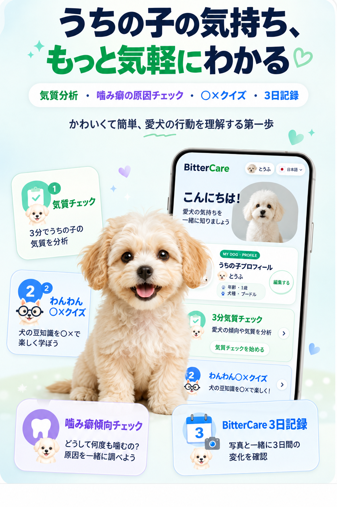

最近の行動を思い出す
散歩や遊び、慣れない環境での最近の反応を思い出しましょう。
FREE DOG PERSONALITY CHECK
同じ行動に見えても、気持ちや気質はそれぞれ違います。普段の様子を思い出し、好奇心・エネルギー・関わり方・噛む傾向を知りましょう。
約3分・購入不要で無料・診断ではなく参考情報
性格チェック無料
GET TO KNOW YOUR DOG
同じ噛む行動でも、気質はそれぞれ。
愛犬の好奇心とエネルギーを
見てみませんか。

HOW IT WORKS
散歩や遊び、慣れない環境での最近の反応を思い出しましょう。
理想の姿より、実際によく見られる行動に近い答えを選びましょう。
4つの観察軸から組み合わせた16タイプと、暮らしのヒントを確認できます。
FOUR OBSERVATION AXES
慣れない場所や物にすぐ近づくか、よく確かめてから動くかを観察します。
長く動いたり遊んだりするか、落ち着いた休息を好むかを見ます。
飼い主さまと一緒の活動を好むか、自分で探索する時間を楽しむかを見ます。
興奮後にすぐ落ち着くか、一つの行動に長く集中するかを見ます。
16 PERSONALITY TYPES
タイプは決めつけるためではなく、今の傾向を理解する出発点です。
新しい場所やにおいを先に確かめます。
人や仲間に会うと元気になります。
好きな遊びに夢中になります。
変化を素早く読み、次の行動を見つけます。
よく確かめてから近づきます。
親しい人のそばで安心します。
慣れた遊びを自分のペースで続けます。
様子を見て、よいタイミングを待ちます。
自分で新しい道を見つけるのが好きです。
自分のタイミングで近づき、愛情を伝えます。
一人でも好きな活動を楽しめます。
周囲に流されず、自分なりの方法を探します。
飼い主さまと新しい体験を楽しみます。
明るい反応で周りを元気にします。
飼い主さまの反応を励みに取り組みます。
親しい人との安定した毎日を好みます。
PERSONALITY & CHEWING
口で物を確かめるのは犬にとって自然なことです。好奇心や退屈が噛む行動に関わることもあります。よく噛む物・場所・状況を一緒に見ると、愛犬に合うケアを考えるヒントになります。
FAQ
はい。製品を購入しなくても無料で利用できます。
いいえ。飼い主さまの観察をもとにした参考情報です。健康や行動が心配な場合は獣医師や行動の専門家にご相談ください。
可能ですが、成長や環境によって行動は変わります。最近の様子をもとに答え、時間を置いて再確認してください。
思い出した状況や最近の環境変化により違う場合があります。一度の結果で決めつけず、繰り返し観察する出発点にしてください。